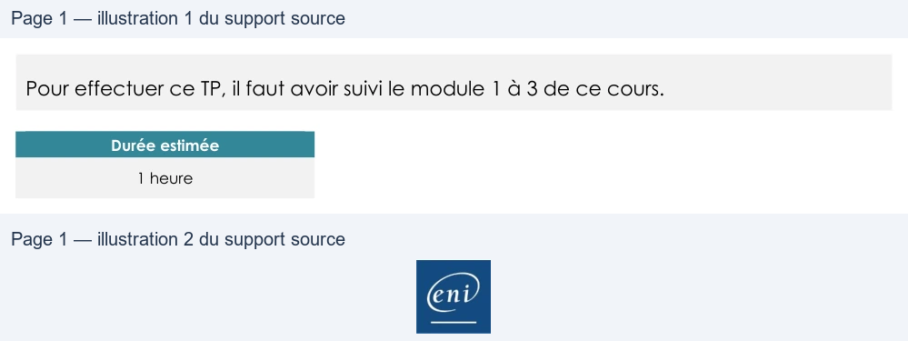

Transcription du document du Drive TSSR. La mise en forme est adaptée au Web ; les compléments IA du portail sont présentés séparément.
Sensibilisation à ITIL
TP du Module 03 - Les publications centrales : stratégie et conception
des services
Pour effectuer ce TP, il faut avoir suivi le module 1 à 3 de ce cours.
Durée estimée
1 heure
On vous demande d'étudier un nouveau service :
•
Accueil d'un nouveau salarié commercial itinérant.
La liste de matériel informatique pour un commercial itinérant :
•
1 Portable : Dell XPS 15 + accessoires
•
1 Dock WD19DCS + accessoires
•
1 Moniteur 22 pouces
•
1 Téléphone IP Cisco 7811 + accessoires
•
1 Smartphone iPhone X + abonnement
Identifier tous les éléments non matériels permettant à l’utilisateur de travailler.
L’entreprise contient les éléments suivants :
•
Un domaine Active Directory nommé « got.lcl »
•
Un domaine de messagerie Office 365 nommé « westeros.fr »
•
Un logiciel de gestion de parc GLPI
•
Une entrée sécurisée par badge
Identifier également tous les éléments permettant aux différents matériels de fonctionner.
Page 1/1
© ENI – Tous droits réservés
